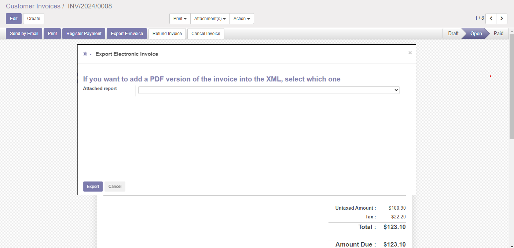

E-Invoice emission

Emissione fattura elettronica


This module allows you to generate the fatturaPA XML file version 1.2.1 which will be sent to the SdI (Exchange System by Italian Tax Authority)
 Read carefully note of module l10n_it_einvoice_base before install this module
Read carefully note of module l10n_it_einvoice_base before install this module
Questo modulo permette di generare il file xml della fatturaPA versione 1.2.1 da trasmettere al sistema di interscambio SdI.
Il modulo è destinato a tutte le aziende che dal 2019 emettono fattura elettronica
Le leggi inerenti la fattura elettronica sono numerose. Potete consultare la normativa fattura elettronica
Per maggiori info leggere le informazioni relative al modulo l10n_it_einvoice_base
| Feature / Funzione | Status | Notes / Note | |
| Emissione FatturaPA |  | Genera file .xml versione 1.2.1 | |
| Emissione Fattura B2B | | Genera file .xml versione 1.2.1 | |
| Emissione Fattura a privato senza PI | | Genera file .xml versione 1.2.1 | |
| E-fattura a rappresentante fiscale | | Genera file .xml versione 1.2.1 | |
| E-fattura a stabile organizzazione | | Genera file .xml versione 1.2.1 | |
| Dati azienda da fattura | | ||
| Controllo dati durante inserimento | | ||
| Logo | Ente/Certificato | Data inizio | Da fine | Note | |||
| xml\_schema | ISO + Agenzia delle Entrate | 01-06-2017 | 31-12-2025 | Validazione contro schema xml | |||
| FatturaPA | 01-06-2017 | 31-12-2025 | Controllo tramite sito Agenzia delle Entrate | ||||
Configuration » Configuration » Invoicing » Fattura PA
Invoicing » Configuration » Tax » Tax » Set Nature
Invoicing » Configuration » Management » Payment Terms
Invoicing » Customers » Customers » Set data
Invoicing » Configuration » Invoicing » Fiscal Positions
Read only:
Invoicing » Configuration » Invoicing » IRS definition » Tax natue
Invoicing » Configuration » Invoicing » IRS definition » Invoice type
Configuration » Configuration » Accounting » Fattura PA » Impostare i vari parametri
Contabilità » Configurazione » Imposte » Imposte » Impostare natura codici IVA
Contabilità » Configurazione » Management » Termini di pagamento » Collegare i termini di pagamento con i relativi termini fiscali
Contabilità » Clienti » Clienti » Impostare Codice Destinatario o PEC o IPA, nazione, partita IVA, codice fiscale
Contabilità » Configurazione » Contabilità » Posizioni fiscali » Collegare posizioni fiscali con regimi fiscali
Per consultazione (non modificare):
Contabilità » Configurazione » Contabilità » Definizioni Agenzia delle Entrate » Natura dell'IVA
Contabilità » Configurazione » Contabilità » Definizioni Agenzia delle Entrate » Tipi Fattura
Authors | Autori:
Contributors | Partecipanti:
Acknowledges | Riconoscimenti:
This module is maintained by the SHS_AV s.r.l..
This module is part of l10n-italy project.
Published information on | Informazioni pubblicate: 2025-10-02